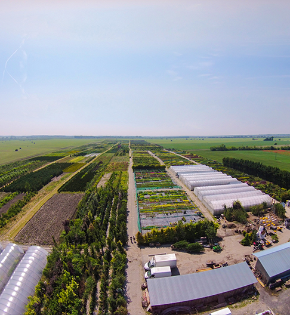
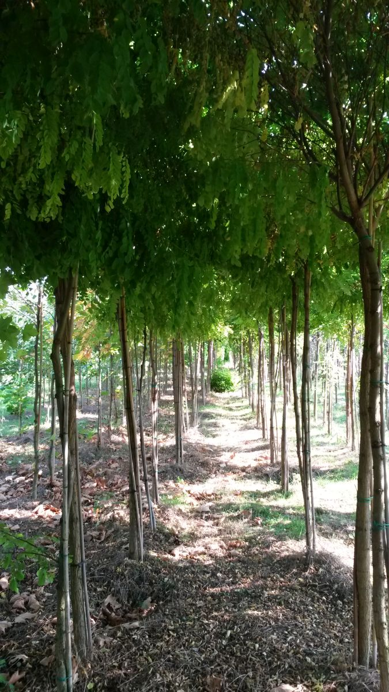
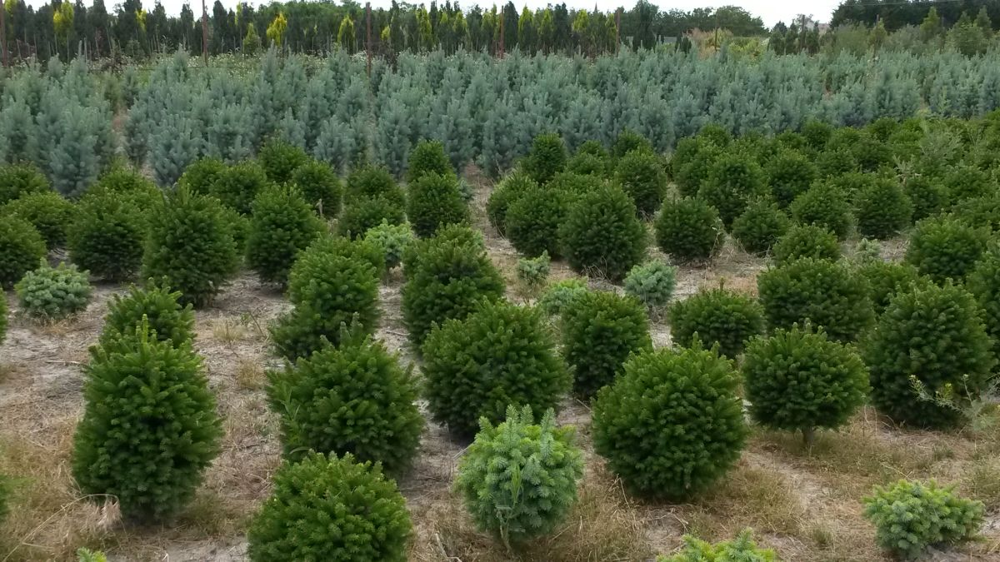
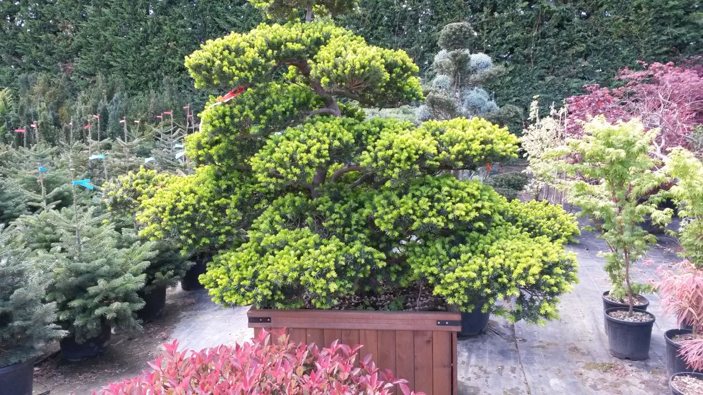
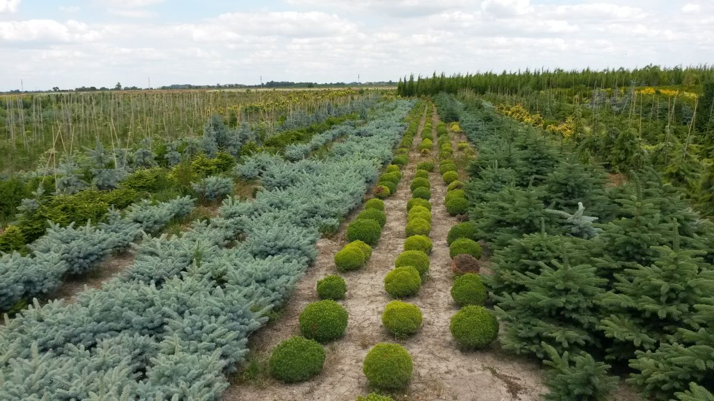
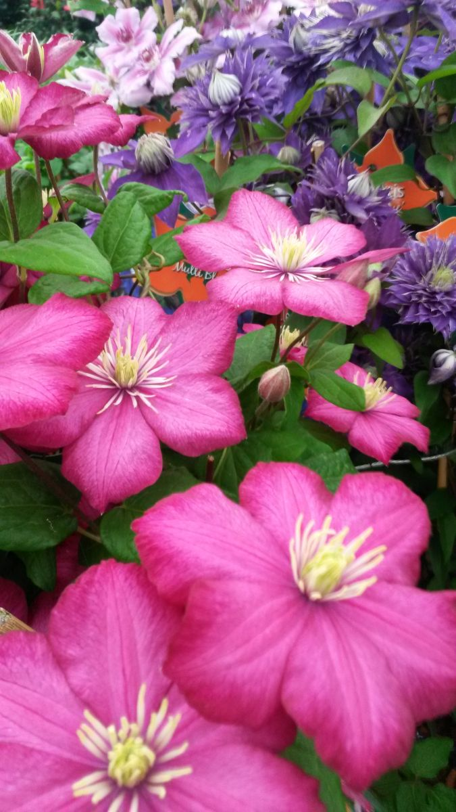
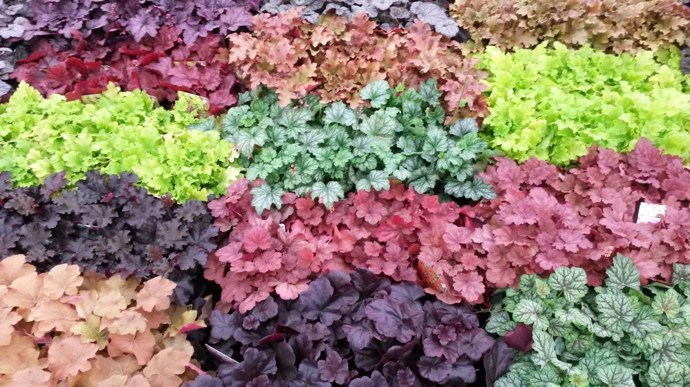
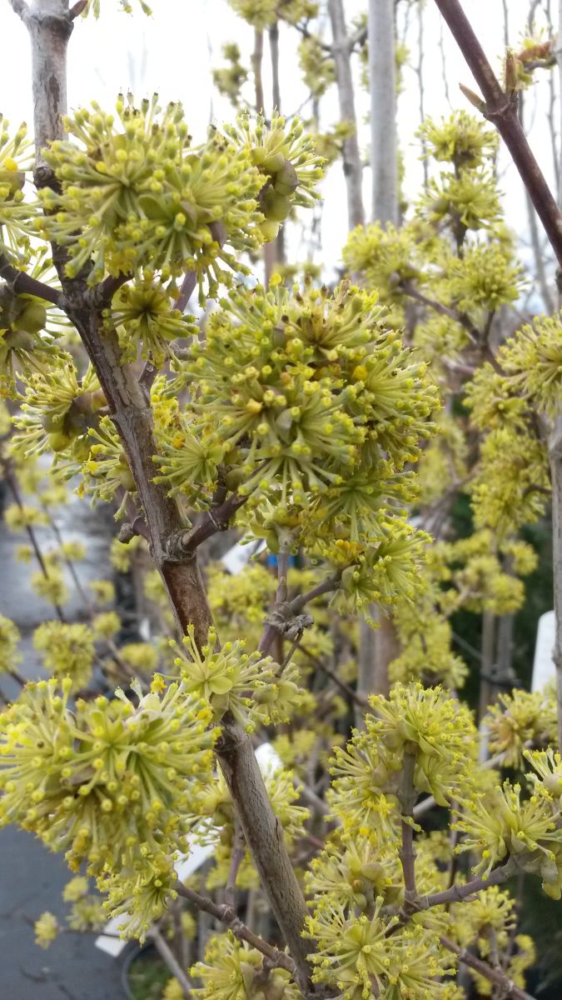
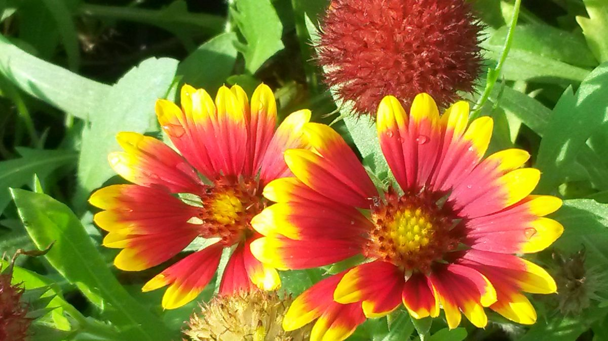

Slovenské okrasné rastliny pestované s láskou a 20-ročnou tradíciou
Produkujeme viac ako 1 500 taxónov drevín, ihličnanov, trvaliek a okrasných tráv aklimatizovaných na stredoeurópske podnebie. Dodávame realizátorom záhrad, záhradným centrám a mestám.
17 ha
Produkčná plocha
1 500+
Kultivarov a taxónov
12 000 m²
Kontajnerovne so závlahou
20+ rokov
Skúseností na trhu

100% Aklimatizované rastliny
Kráľovianky 28, Šamorín · Otvorené
100% Aklimatizované rastliny
Všetky rastliny pestujeme výhradne v našich klimatických podmienkach na Žitnom ostrove. Žiadny mrazový šok ako pri dovozoch z juhu.
Kompletné pestovateľské štádiá
Od mladého materiálu v K9 sadbovačoch na ďalšie pestovanie cez kontajnery 1L–10L až po vzrastlé solitéry so zemným balom.
Riadená závlaha a substráty
Rastliny pestujeme v špičkových substrátoch s pozvoľna sa uvoľňujúcimi živinami a automatickou kvapkovou závlahou.
Partner pre profesionálov
Spoľahlivé veľkoobchodné kapacity pre plošné výsadby diaľnic, developerských parkov aj exkluzívnych súkromných záhrad.
Od návrhov záhrad k poprednej okrasnej škôlke
Pestovaniu okrasných rastlín sa venujeme vyše 20 rokov. Naša cesta začala realizáciami záhrad na kľúč – od návrhu, závlahových systémov, jazierok až po samotné výsadby. Počas tejto praxe sme dôkladne spoznali, ako sa jednotlivé taxóny správajú v rôznych pôdach, ako reagujú na rez, letné horúčavy či silné mrazy.
Aby sme zaistili maximálnu kvalitu a odolnosť výsadieb, začali sme budovať vlastnú škôlku v Šamoríne-Kráľoviankach. Dopyt od ostatných realizátorov a záhradných centier rástol tak rýchlo, že pestovanie rastlín nás zamestnalo na 100 % a realizácie sme prenechali našim partnerom.
Dnes hospodárime na ploche 17 hektárov, z čoho 12 000 m² tvoria moderné kontajnerovne a 3 000 m² fóliovníky (polovica z nich vykurovaná pre rezkovačky, vrúbľovanie a očkovanie).


Interaktívny katalóg drevín, trvaliek a tráv
Vyhľadajte si konkrétny druh alebo filtrujte podľa kategórie a nárokov na stanovište. V databáze máme vyše 1 500 taxónov.
B2B Cenník 2026 pre realizátorov a záhradné centrá
Náš cenník je chránený heslom, aby sme chránili veľkoobchodné marže našich odberateľov. Prístupové heslo vám radi zašleme obratom po overení IČO alebo záhradníckej živnosti.
Pre realizátorov záhrad
Množstevné zľavy, možnosť rezervácie celých ucelených projektov a príprava rastlín na konkrétny termín výsadby priamo na paletách.
Pre záhradné centrá
Pravidelné týždenné závozy, perfektne zakorenený tovar v prezentačných kontajneroch s etiketou a vysokou trvanlivosťou na predajni.
Pre mestá a developerov
Certifikovaný materiál na líniové a krajinné výsadby, vysoká ujatosť vďaka lokálnemu pestovaniu bez stresu z dlhej dopravy.
Máte už pridelené heslo?
Ešte nemáte heslo? Vyplňte formulár nižšie a odošleme vám ho do 2 hodín.
Heslo overené! Cenník pre sezónu 2026 bol sprístupnený.
Máte k dispozícii kompletný sortiment s veľkoobchodnými B2B cenami.
Nezáväzný dopytový kalkulátor rastlín
Zostavte si orientačnú špecifikáciu rastlín pre váš projekt a odošlite ju nášmu obchodnému tímu na presnú cenovú ponuku s dopravou.
1. Vyberte kategórie a predpokladané množstvá
2. Špecifikácia odberu a doručenia
Nahliadnite do našej 17 ha okrasnej škôlky
Autentické zábery našich kontajnerovní, fóliovníkov a zdravých porastov priamo v Šamoríne-Kráľoviankach.






Čo hovoria záhradníci a architekti
S okrasnou škôlkou VRBA spolupracujeme už ôsmy rok. Rastliny pestované v Šamoríne majú bezkonkurenčnú ujatosť na stavbách v Bratislave aj Trnave. Žiadne vymŕzanie ani úhyn prvú zimu.
Die Qualität der Koniferen und Gräser ist hervorragend. Durch die Nähe zur österreichischen Grenze (nur 35 Min. von Kittsee) holen wir große Pflanzenpartien direkt ab. Zuverlässig und fachlich top!
A növények kondíciója kifogástalan, a földlabdás szoliterek gyökérzete erős és dús. Győr és Mosonmagyaróvár környéki projektjeinkhez rendszeresen innen rendeljük a törzses fákat és díszfüveket.
Často kladené otázky (FAQ)
Naším hlavným zameraním je veľkoobchod pre realizátorov, záhradné centrá, mestá a obce. V areáli v Kráľoviankach však radi privítame aj náročnejších súkromných pestovateľov, ktorí hľadajú kvalitné aklimatizované rastliny.
Rastliny z Talianska alebo juhozápadnej Európy sú zvyknuté na miernu zimu a vysokú vlhkosť. Po výsadbe v kontinentálnej strednej Európe často trpia mrazovým šokom a suchom. Naše rastliny sú od semienka a odrezku pestované na Žitnom ostrove a bez problémov zvládajú -20 °C aj letné suchá.
Stačí vyplniť kontaktný formulár alebo poslať e-mail na vrba@vrbazahrady.sk s uvedením vášho IČO alebo zamerania vašej firmy. Heslo vám odošleme zvyčajne do niekoľkých hodín.
Áno, pri väčších zákazkách zabezpečujeme paletovú prepravu alebo rozvoz priamo na stavbu v rámci celého Slovenska, Rakúska a Maďarska.
Kde nás nájdete & Ako sa k nám dostanete
Adresa škôlky
VRBA, s.r.o., Kráľovianky 28, 931 01 Šamorín, Slovensko
Otváracia doba
Pondelok – Piatok: 7:30 – 16:00 Sobota – Nedeľa: Zatvorené (po dohode)
Navigácia z hlavných smerov
Z Bratislavy: Po diaľnici R7 výjazd Šamorín-Sever, pokračujte smer Dunajská Streda (cesta 63). Cca 2 km za Šamorínom odbočte doľava na Veľká Paka. Vojdete priamo do obce Kráľovianky, na konci po pravej strane je areál s fóliovníkmi č. 28.
Spojte sa s naším tímom
Potrebujete naceniť projekt, overiť dostupnosť kultivarov alebo navštíviť škôlku? Napíšte nám.